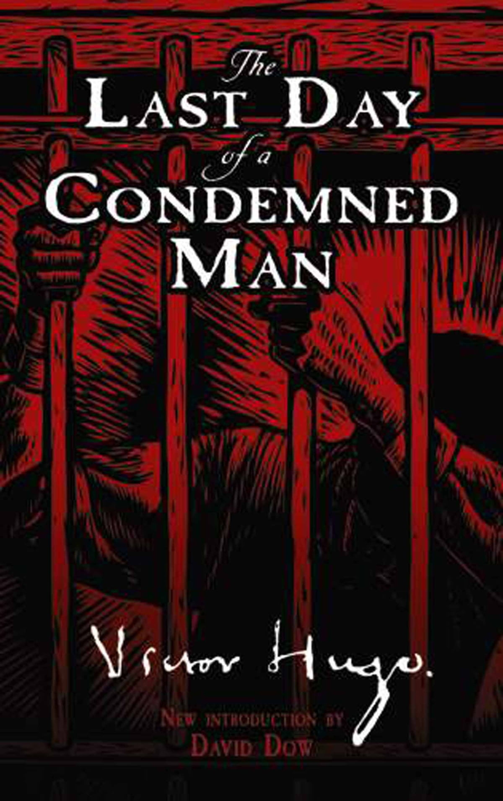

The Last Day of a Condemned Man By Victor Hugo
"The Last Day of a Condemned Man" is a book by Victor Hugo. It's about a person who is going to be executed and the book shows what goes through their mind on the last day before the execution. The story makes us think about right and wrong, how society treats criminals, and whether the death penalty is fair. It's a sad and deep book that talks about big ideas through the thoughts of the main character."